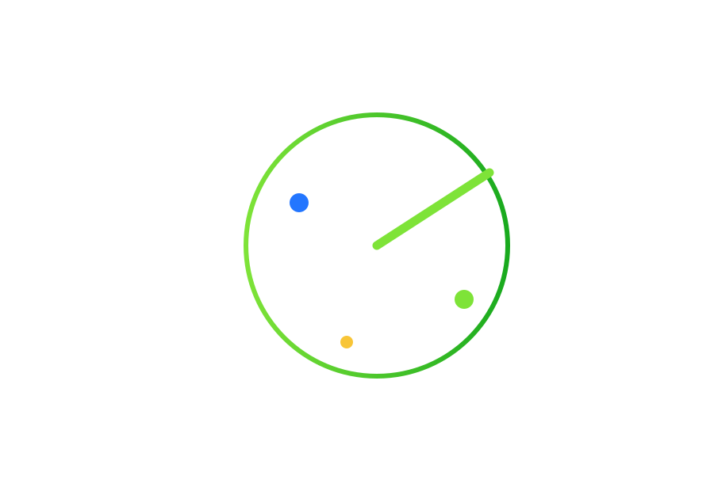
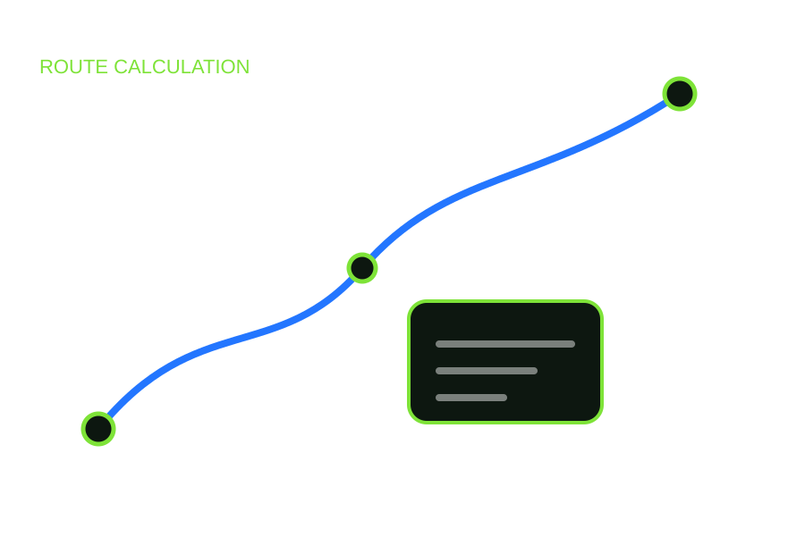
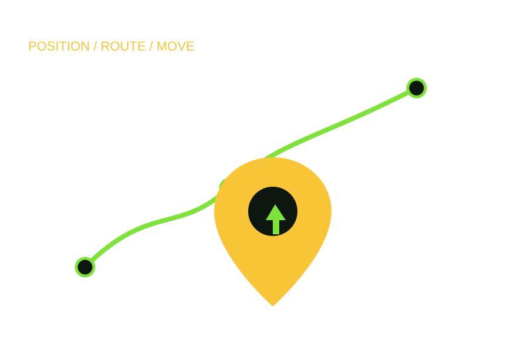
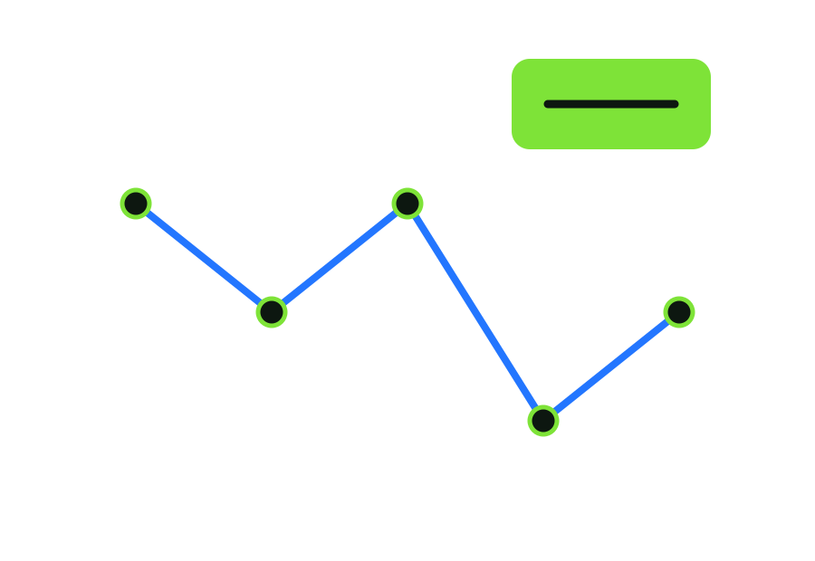
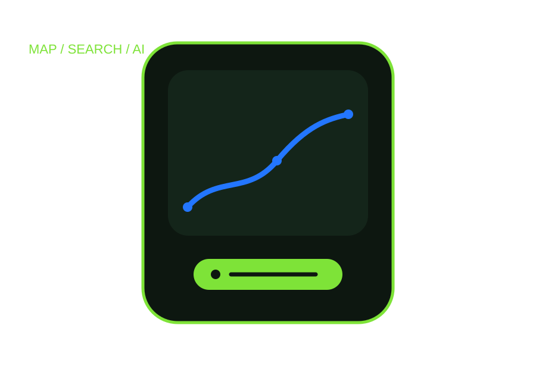
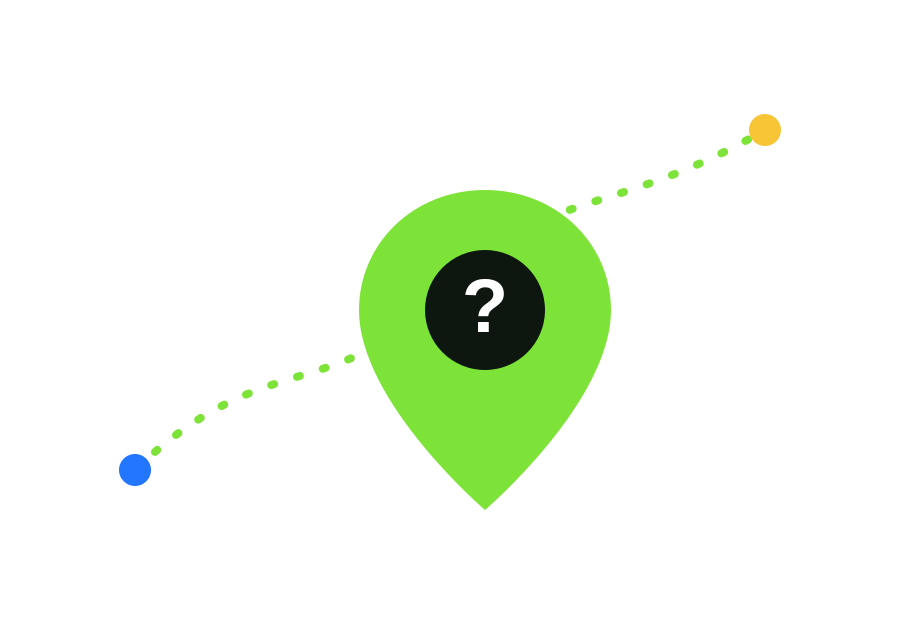

Не сравниваем
Здесь нет «раньше / сейчас» и нет попытки определить, какая эпоха была лучше.
Научпоп-проект 2ГИС · 1938—2056
История инженерных идей и людей, которые передают их дальше: от первых электронных карт и ЭВМ до навигации, геоданных и ИИ.
Идеи не появляются из ниоткуда. Они переходят от человека к человеку, меняются вместе с городом и получают новую жизнь в руках следующего поколения инженеров.
Здесь нет «раньше / сейчас» и нет попытки определить, какая эпоха была лучше.
Нас интересует путь инженерного вопроса — как он живёт, меняется и становится частью новых технологий.
Статья начинается с автора. Продолжение — с людей 2ГИС, которые работают с этой темой сегодня.
Каждая глава — не «этап прогресса», а новый поворот одной истории: как люди учились описывать город, находить путь, ориентироваться и работать с городскими данными.
Радиоволны, электронная карта, ранние представления об автоматическом движении и желание связать изображение местности с реальным пространством.

Транспортная сеть становится задачей для вычислительной машины: точки, расстояния и поиск маршрута складываются в математическую модель.

Планирование пути, определение положения и движение по маршруту начинают работать как части одной навигационной системы.

Карты, организации, транспорт и события превращаются в постоянно обновляемые наборы данных — и начинают жить на экранах миллионов людей.

Поиск работает со смыслом, маршрут — с человеческим сценарием, карта — с аналитическими вопросами. В историю входят ML и ИИ.

В 1956-м инженер Георгий Бабат писал статьи от лица 2056 года. Теперь мы задаём тот же вопрос разработчикам 2ГИС: что станет привычным через 30 лет?

Не сопоставление технологий. Две точки на одном маршруте и люди по обе стороны времени.
Пишет о том, как вычислительная машина получает транспортную карту Москвы и ищет маршрут по городу.
Рассказывает о работе с дорожным графом, алгоритмами и маршрутом как инженерной задачей, которая продолжает развиваться.
Не безымянная «технология», а конкретные авторы, инженеры, исследователи и разработчики, благодаря которым идея продолжает путь.